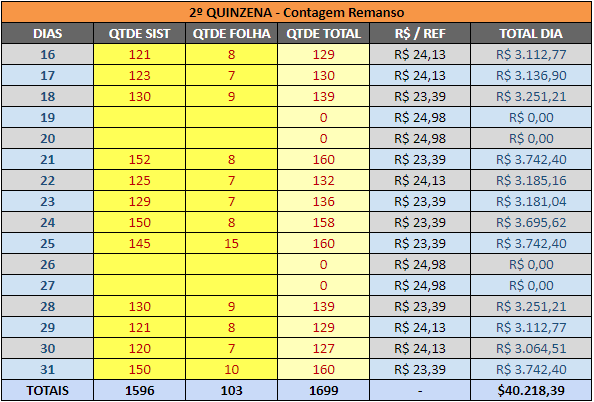

O rateio da It's Cool é feito com base na planilha encaminhada pelo vetorh através do email da Administração, que deve ser baixada e tratada, deixando apenas as informações que são necessárias para a contagem das quantidades. Após isso, as informações devem ser colocadas na planilha Risa 2023 (como mostra a imagem abaixo) de acordo com a quantidade diária de alimentações
A primeira coisa a ser feita nela é o preenchimento da coluna "QTDE SIST" com as quantidades diárias do relatório e também a coluna "QTDE FOLHA" com as quantidades das assinaturas e então o total será calculado automaticamente na coluna "QTDE TOTAL".
Ainda não sei
São encaminhados emails na caixa delegada da Administração com a planilha de rateio, alteramos a alocação das despesas com base nas informações contidas nelas
Ambos são modificados com base no uso do serviço de cartório por cada setor e as despesas são alocadas para os mesmos, sempre que chegar algum comprovante verificar quem utilizou o serviço para o lançamento futuro
Apesar destes lançamentos serem alterados os rateis com base nas viagens feitas durante o mês, quem lança estas despesas são as meninas do setor de Viagens
Estes tipos de lançamentos são menos complexos, pois assim que chegam as notas/faturas o que precisamos fazer é substituir o valor que está no Sapiens pelo valor correto, verificar a data de vencimento desta OC para utilizar o orçamento do mês correto e então liberar para a aprovação.
Abaixo temos os lançamentos que se enquadram neste perfil: